1.到底什么是虚拟内存地址
这里我们以 Intel Core i7 处理器为例，64 位虚拟地址的格式为：全局页目录项（9 位）+ 上层页目录项（9 位）+ 中间页目录项（9 位）+ 页表项（9 位）+ 页内偏移（12 位）共 48 位组成的虚拟内存地址。
32 位虚拟地址的格式为：页目录项（10 位）+ 页表项（10 位） + 页内偏移（12 位）。
2.为什么要使用虚拟地址访问内存
首先虚拟地址可以将扩大物理空间，使得系统可以运行比物理内存更大的进程。其次对于每个进程操作系统都会为其分配一个独立的虚拟内存空间，每个虚拟内存空间都会有一张页表来映射物理内存空间，对于每个进程来说页表是私有的，进程之间不可以访问对方的页表，这也就解决了多进程内存访问冲突的问题了。最后，在页表中不仅有页号与物理块号的映射，也会标记一些其他信息，比如说 标记当前页面是否在内存中，页面的读写权限的。就页面读写权限来说使得地址访问更加安全。
3.Linux 进程虚拟内存空间
在 32 位机器上虚拟内存分布
在 32 位机器上，指针的寻址范围为 2^32，所能表达的虚拟内存空间为 4 GB。所以在 32 位机器上进程的虚拟内存地址范围为：0x0000 0000 - 0xFFFF FFFF。
其中用户态虚拟内存空间为 3 GB，虚拟内存地址范围为：0x0000 0000 - 0xC000 000 。
内核态虚拟内存空间为 1 GB，虚拟内存地址范围为：0xC000 000 - 0xFFFF FFFF。
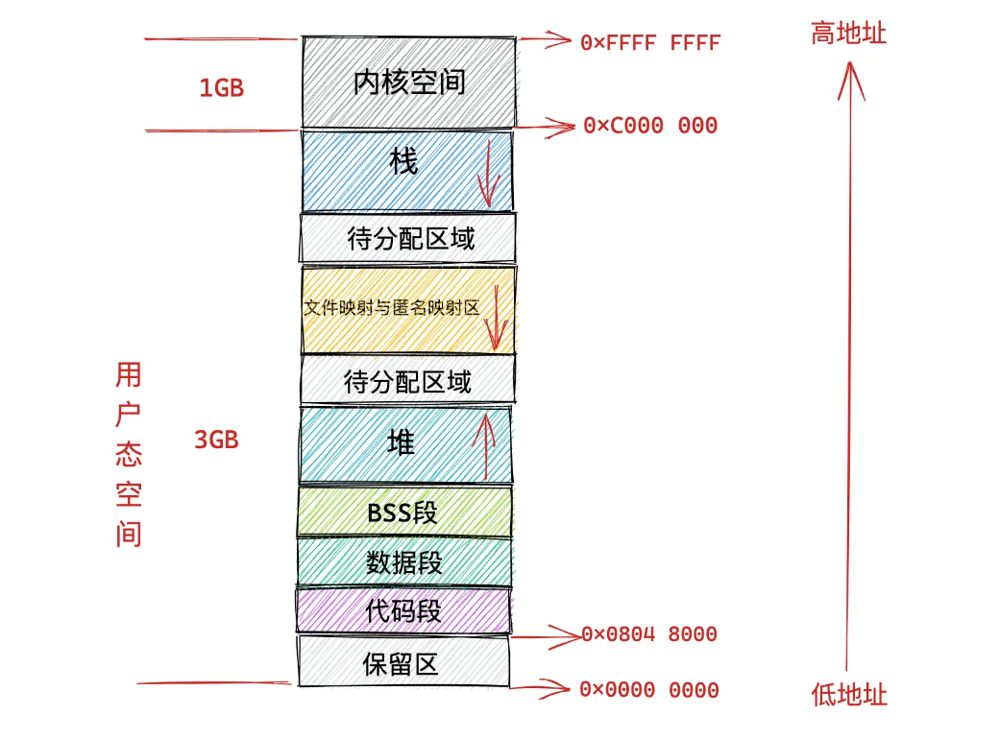
64 位机器上进程虚拟内存空间分布
那么我们理所应当的会认为在 64 位机器上，指针的寻址范围为 2^64，所能表达的虚拟内存空间为 16 EB 。虚拟内存地址范围为：0x0000 0000 0000 0000 0000 - 0xFFFF FFFF FFFF FFFF 。事实上在目前的 64 位系统下只使用了 48 位来描述虚拟内存空间，寻址范围为 2^48 所能表达的虚拟内存空间为 256TB。
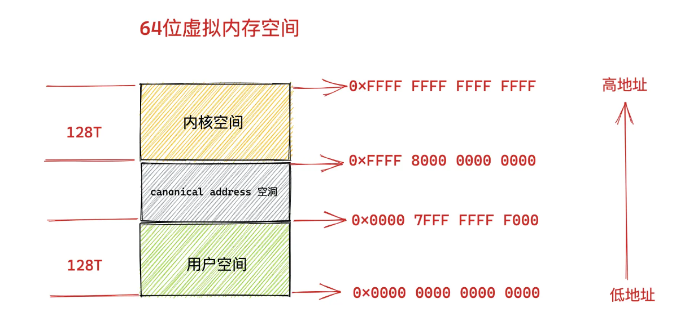
4.进程虚拟内存空间的管理
比较关键的数据结构
进程描述符 task_struct
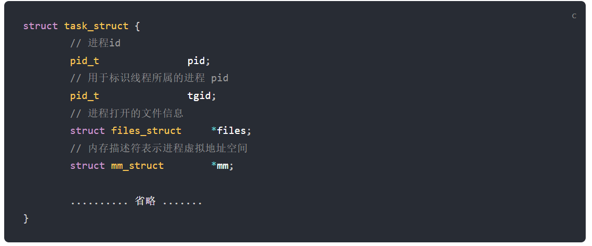
内存描述符 mm_struct
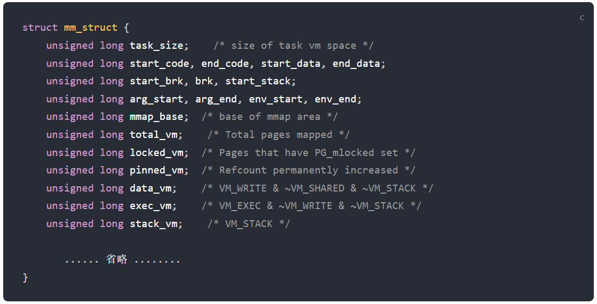
mm_struct 结构体中的 total_vm 表示在进程虚拟内存空间中总共与物理内存映射的页的总数。
locked_vm 就是被锁定不能换出的内存页总数
pinned_vm 表示既不能换出，也不能移动的内存页总数。
data_vm 表示数据段中映射的内存页数目
exec_vm 是代码段中存放可执行文件的内存页数目
stack_vm 是栈中所映射的内存页数目
子进程在新创建出来之后它的虚拟内存空间是和父进程的虚拟内存空间一模一样的，直接拷贝过来。
如何划分
内核如何划分用户态和内核态虚拟内存空间
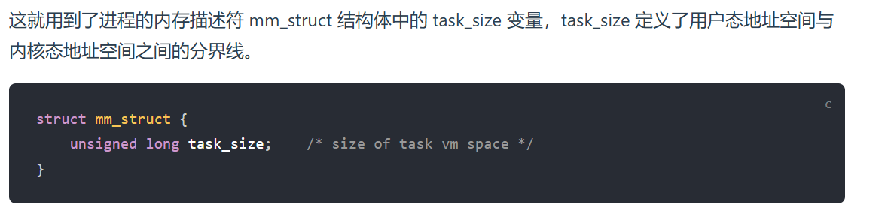
如何布局
内核如何布局进程虚拟内存空间（划分进程虚拟内存分区）
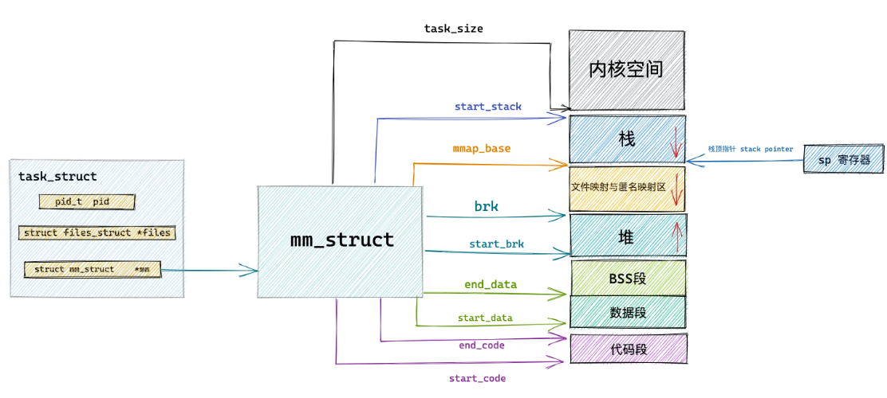
如何管理
内核如何管理虚拟内存区域（描述虚拟内存）
vm_area_struct 描述符，正是这个结构体描述了这些虚拟内存区域 VMA（virtual memory area）。
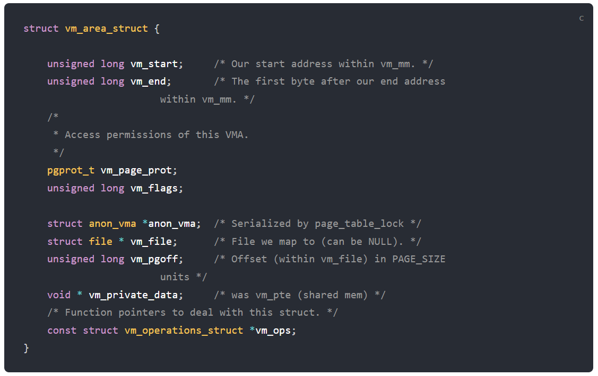
vm_area_struct 结构描述的是 [vm_start，vm_end)这样一段左闭右开的虚拟内存区域。
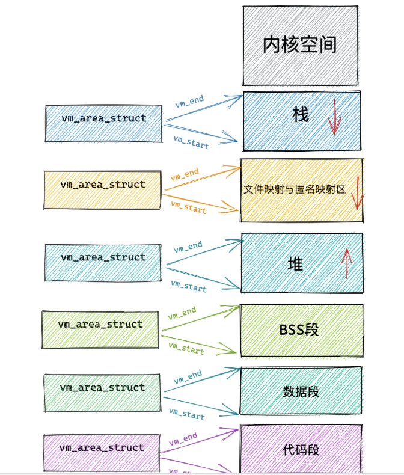
访问权限和行为规范
定义虚拟内存区域的访问权限和行为规范
vm_page_prot 和 vm_flags 都是用来标记 vm_area_struct 结构表示的这块虚拟内存区域的访问权限和行为规范。
vm_page_prot 偏向于定义底层内存管理架构中页这一级别的访问控制权限它可以直接应用在底层页表中
vm_flags 则偏向于定于整个虚拟内存区域的访问权限以及行为规范描述的是虚拟内存区域中的整体信息，而不是虚拟内存区域中具体的某个独立页面描述的是虚拟内存区域中的整体信息，可以通过 vma->vm_page_prot =vm_get_page_prot(vma->vm_flags)实现到具体页面访问权限 vm_page_prot 的转换。
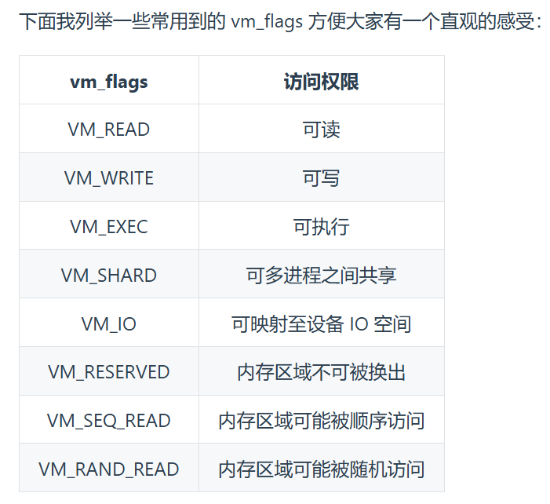
映射关系
关联内存映射中的映射关系
anon_vma, vm_file,vm_pgoff
当我们调用 malloc 申请内存时,如果申请的是小块内存(低于 128K)则会使用 do_brk()系统调用通过调
整堆中的 brk 指针大小来增加或者回收堆内存。
如果申请的是比较大块的内存(超过 128K)时,则会调用 mmap 在上图虚拟内存空间中的文件映射与匿
名映射区创建出一块 VMA 内存区域(这里是匿名映射)。这块匿名映射区域就用 struct anon_vma 结构
表示。
当调用 mmap 进行文件映射时,vm_file 属性就用来关联被映射的文件。这样一来虚拟内存区域就与映射
文件关联了起来。vm_pgoff 则表示映射进虚拟内存中的文件内容在文件中的偏移。
当然在匿名映射中,vm_area_struct 结构中的 vm_file 就为 null,vm_pgoff 也就没有了意义。
vm_private_data 则用于存储 VMA 中的私有数据。具体的存储内容科和内存映射的类型有关,我们暂不展开论述。
相关操作
针对虚拟内存区域的相关操作
struct vm_area_struct 结构中还有一个 vm_ops 用来指向针对虚拟内存区域 VMA 的相关操作的函数指针。
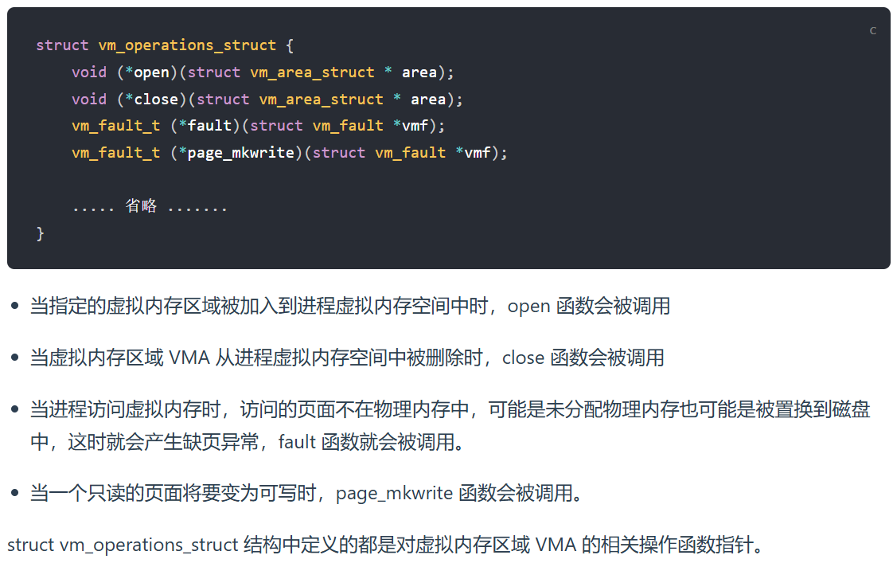
如何被组织的
虚拟内存区域在内核中是如何被组织的
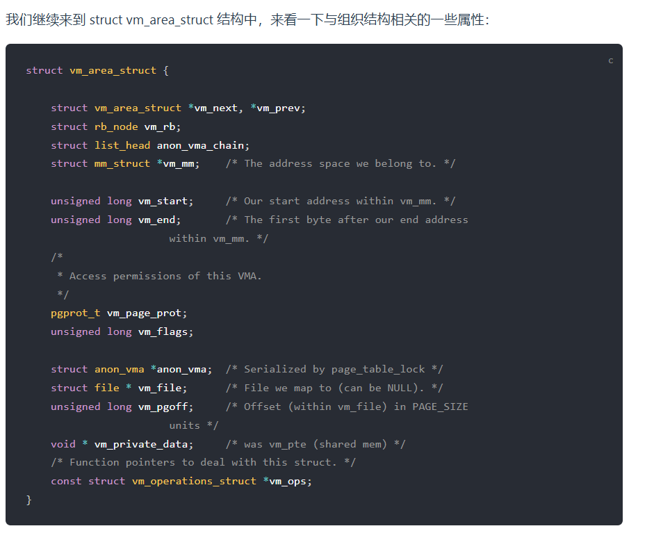
mm_struct 中的页表会映射所有 VMA 的物理地址，VMA 则提供了虚拟地址范围和访问权限等信息。
vm_area_struct 会有两种组织形式一种是双向链表用于高效的遍历，另一种就是红黑树用于高效的查找。
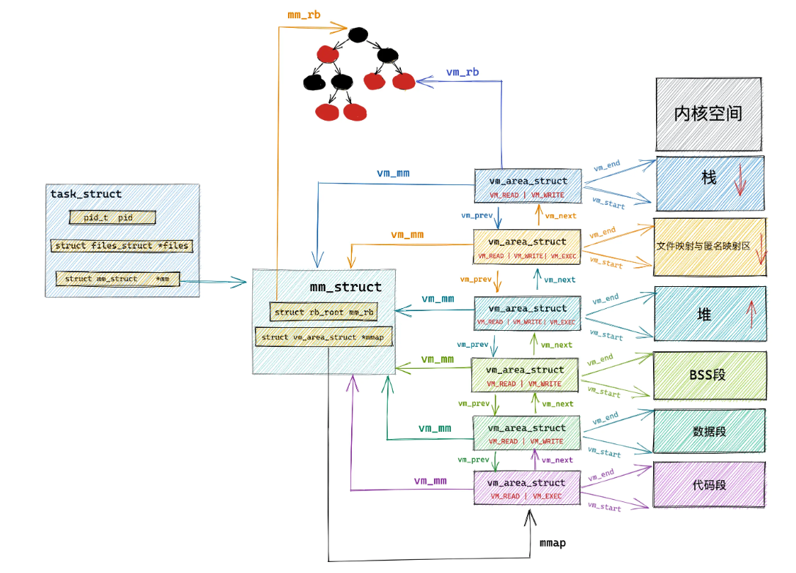
5.程序编译后的二进制文件如何映射到虚拟内存空间中
代码进行编译后会生成 elf 格式的二进制文件，代码在运行的时候会从磁盘空间 section 段映射到内存 segment 段， 具体是通过函数 load_elf_binary()函数来映射的，并且初始化了 mm_struct 内存描述符和 vm_area_strcut 虚拟内存区域
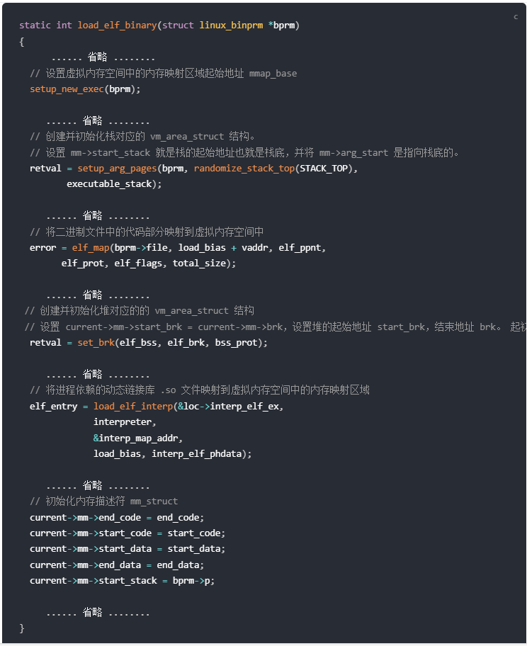
setup_new_exec: 设置虚拟内存的起始位置
setup_arg_pages: 初始化栈和 vm_area_struct 虚拟区域
elf_map : 映射 elf 格式的代码到内存虚拟空间
set_brk:初始化堆以及 vm_area_struct 结构
6.内核虚拟内存空间
不同进程之间共享同一个内核空间。
32 位体系下内核空间分布
直接映射区
在大小为 1G 的内核虚拟空间中，前 896m 为直接映射区或线性映射区 ，之所以叫直接映射区是因为这块地址会映射到一整块地址连续的 896M 的物理空间， 地址范围是 3G ~ 3G+896M；
在这段 896M 的物理内存中， 前 1M 在系统启动时被系统占用； 1M 之后存储的是代码段，data 段，bass 段。在创建进程时还会在该段区域存储 task_struct 进程描述符、 mm_struct 进程空间描述符、vm_area_struct 虚拟空间描述符；
还有进程创建完毕后也是在这段区域创建内核栈，内核栈的大小固定（2 页大小）
由于计算机体系受硬件制约，在 x86 体系下， ISA 总线的 DMA（直接内存存取）只能在直接映射区前 16M 进行寻址，在物理内存中这前 16M 空间就被成为 ZONE_DMA 区域，后 16~896M 空间则被称为 ZONGE_NORMAL 区域。在虚拟内存中分别被称为 DMA,NORMAL 映射区
ZONE_HIGHMEM 高端内存
在物理内存 896M 以上的空间就是 ZONE_HIGHTMEM 空间，这段区域无法通过直接映射的方式映射到虚拟空间中，只能通过动态映射的方式一段一段映射
内核虚拟内存空间中的 3G + 896M 这块地址在内核中定义为 high_memory，high_memory 往上有一段 8M 大小的内存空洞。空洞范围为 high_memory 到 VMALLOC_START 。
vmalloc 动态映射区
接下来 VMALLOC_START 到 VMALLOC_END 之间的这块区域称为动态映射区，采用动态映射的方式映射物理内存中的高端内存。
在 PKMAP_BASE 到 FIXADDR_START 之间的这段空间称为永久映射区。在内核的这段虚拟地址空间中允许建立与物理高端内存的长期映射关系。
固定映射区
下一个区域为固定映射区，区域范围为：FIXADDR_START 到 FIXADDR_TOP。在固定映射区中的虚拟内存地址可以自由映射到物理内存的高端地址上，但是与动态映射区以及永久映射区不同的是，在固定映射区中虚拟地址是固定的，而被映射的物理地址是可以改变的。也就是说，有些虚拟地址在编译的时候就固定下来了，是在内核启动过程中被确定的，而这些虚拟地址对应的物理地址不是固定的。
临时映射区
临时将缓存页临时映射到内核空间的一段虚拟地址上
32 位体系结构下 Linux 虚拟内存空间整体布局
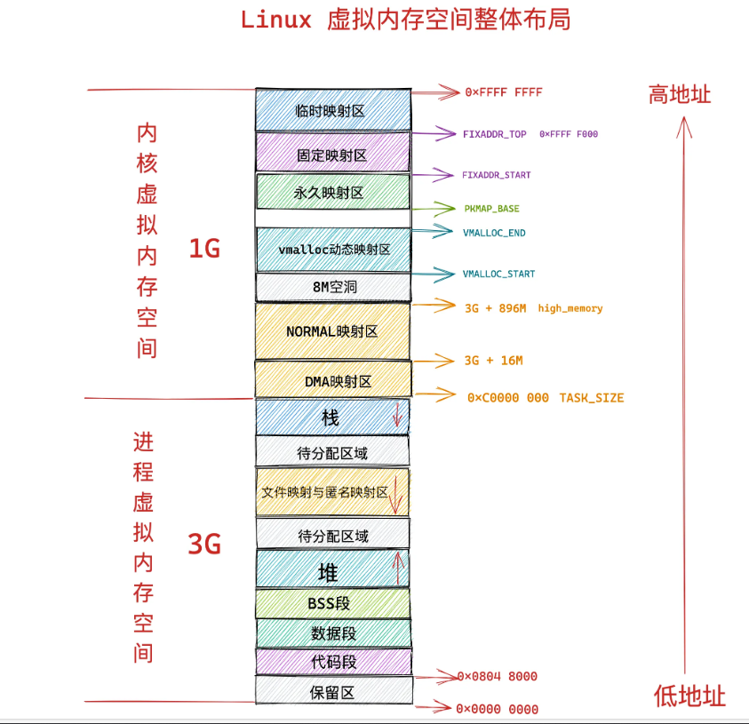
64 位体系内核虚拟内存空间布局
在 64 位操作系统中使用 48 位来表示虚拟内存空间，其中低 16 位表示用户进程虚拟内存空间， 高 16 位表示内核虚拟内存空间，内存虚拟空间足足有 128T 可以说是非常大 可以随意挥霍
在空间布局上，首先是一个 8T 的内存空洞，然后紧接着 64T 的直接映射区，之后是 32T 的动态映射区，之后是 1T 的虚拟内存映射区，最后是 512M 的代码区
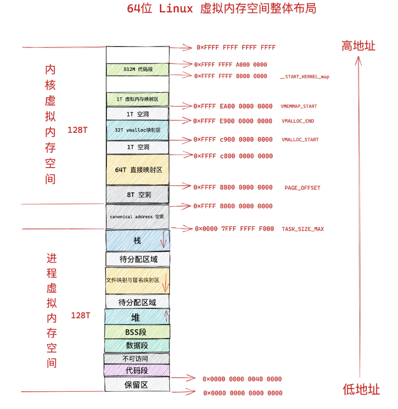
7.物理内存
我们平时称的内存 也叫做随机访问存储器，也就是 RAM，RAM 分为两类，一个是 SRAM 静态 RAM 用于 CPU 高速缓存，特点是速度快，容量小，造价高； 另一个是 DRAM 动态 RAM ，就是我们常说的主存，特点是访问稍慢，容量大，造价低。
DRAM 的访问
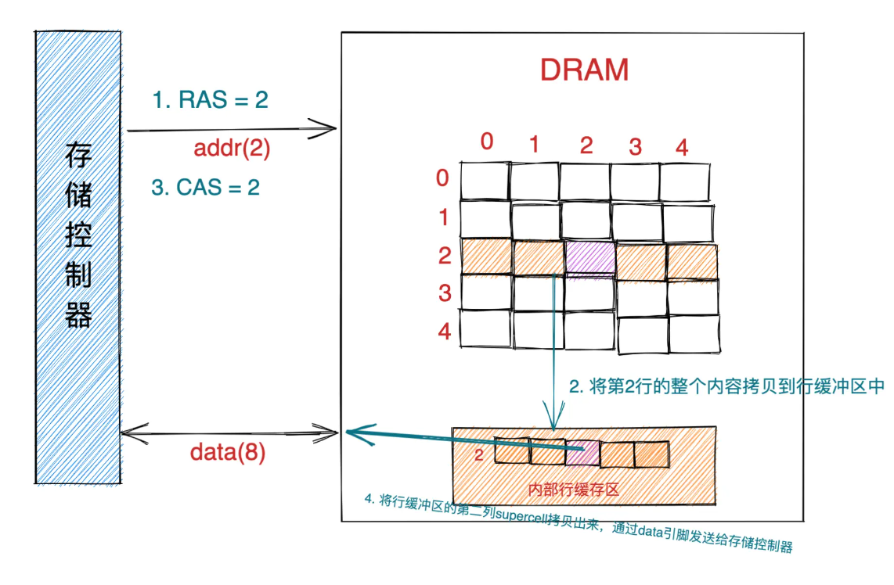
我们所说的主存有多个存储模块组成，每个存储模块包含 8 个 DRAM 芯片，每个 DRAM 芯片是一个二维结构，每个 DRAM 有两个地址引脚，通过 CAS , RAS 来访问 DRAM 芯片的基础单元 supercell, 每个 supercell 为一个字节大小；访问一个 Supercell 的具体流程如下：
- 首先存储控制器将行地址 RAS = 2 通过地址引脚发送给 DRAM 芯片。
- DRAM 芯片根据 RAS = 2 将二维矩阵中的第二行的全部内容拷贝到内部行缓冲区中。
- 接下来存储控制器会通过地址引脚发送 CAS = 2 到 DRAM 芯片中。
- DRAM 芯片从内部行缓冲区中根据 CAS = 2 拷贝出第二列的 supercell 并通过数据引脚发送给存储控制器。
每次存储模块访问都会广播 CAS, RAS 数据 从 8 个 DRAM 中读取 8 个字节数据返回。
CPU 访问主存的过程
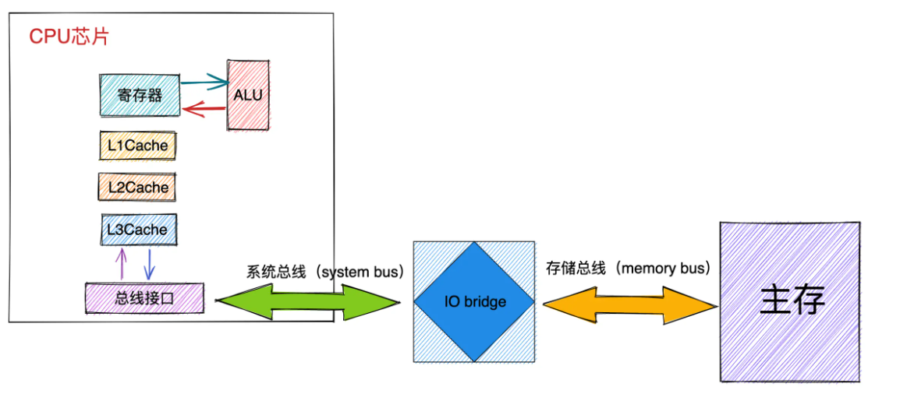
CPU 与内存之间的数据交互是通过总线（bus）完成的，而数据在总线上的传送是通过一系列的步骤完成的，这些步骤称为总线事务（bus transaction）。
其中数据从内存传送到 CPU 称之为读事务（read transaction），数据从 CPU 传送到内存称之为写事务（write transaction）。
其中系统总线是连接 CPU 与 IO bridge 的，存储总线是来连接 IO bridge 和主存的。 IO bridge 其实起的作用就是转换不同总线上的电子信号。